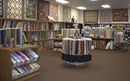
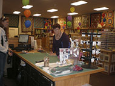

Address
Memory Lane Quilt Shop1626 N. Magnolia Avenue
El Cajon, CA 92020
Telephone
(619) 562-2288Hours
Regular Store HoursMon – Fri: 9:30 am – 6:00 pm
Sat: 9:30 am – 5:00 pm
Sun: 11:00 am – 5:00 pm
Website
www.memorylanequiltshop.comMemory Lane Quilt Shop
Memory Lane Quilt Shop is located in El Cajon less than 1 mile from 3 major freeways (Interstate 8, State Route 52 and State Route 67) which makes getting to our new location a breeze.
We take pride in creating a warm, welcoming and friendly environment for all our quilting friends! You will find all of our staff is fabulous….friendly as well as quilting savvy and will give you that unique personalized service!
Not be forgotten, we also make lots of quilt kits that are exclusive to our shop, so you will want to check these out as well.
We have a huge classroom and lots of classes too! Classroom features include: Private classroom, carpeting, heating air-conditioning, comfy chairs, wood tables , design walls, cutting and ironing stations! Our classes are also listed on the website for your convenience!
Looking for a long arm quilter? Look no further, we have one in-house for all your quilting needs!
If you want to get a sneak peak of our shop and all we have to offer, visit us online at www.memorylanequiltshop.com. While there be sure and check out our Theme Quilt of the month and our Batik Club!
For all of you who have never been to our shop,
We hope you stop in and take time to enjoy your stay.
We invite you to come by as often as you can!
And for all of you have been to our shop, we welcome you back!
WWhen planning your route...we have In-N-Out, Taco Bell and Weinerschnnitzel directly across the street!
Map & Directions
View Larger Map
- Home
- Prize Winners
- Webmaster
- © Southern California Quilters Run 2016-17